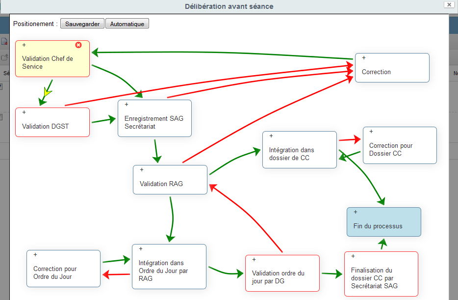
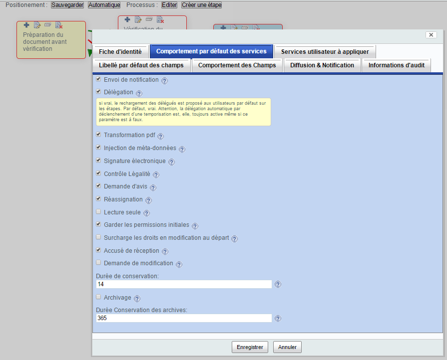
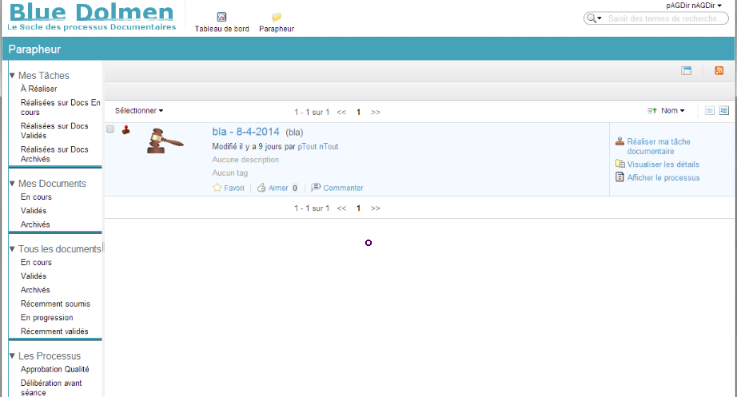
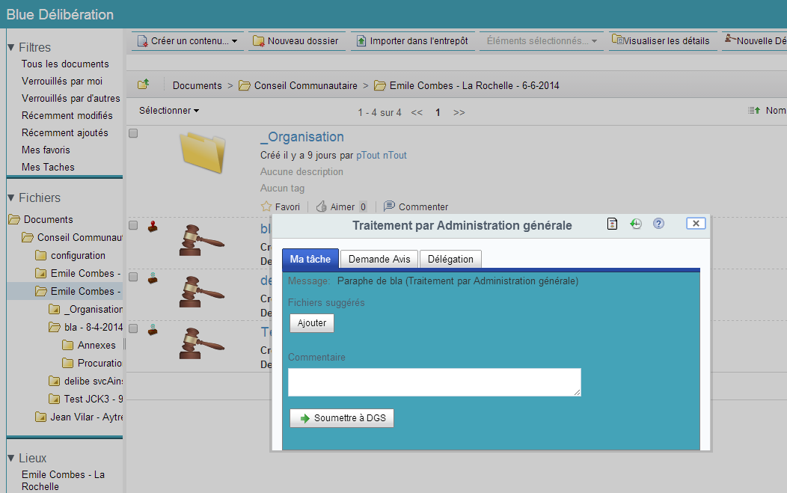

Guide d'utilisation de BlueProcessus¶
Présentation Générale¶
Blue Processus est un outil open source graphique de modélisation et de déploiement de processus documentaires métier déployables sur l'environnement Alfresco de gestion électronique de document.
Il est composé exclusivement d'une extension sur Alfresco et son portail Alfresco Share.
Il permet de gérer et optimiser la circulation, la vérification, l'approbation et la diffusion de vos documents, télé-procédures et flux métiers tout en y associant une/la valeur probante (signature électronique….). Il permet de générer des parties de documents (cartouche de rédaction, cartouche d'approbation, référence, ...) ou des documents complets (convocation, suivi, dossier aggrégé, ...).
Les processus documentaires sont définis par vos soins via la création graphique d'éléments sous le portail Alfresco Share. Ces éléments sont associés les uns aux autres pour définir le chemin que suivra le processus entre les acteurs successifs.

La figure ci-dessus montre le modeleur web de processus documentaires accessible directement depuis Alfresco Share. Le modèle de processus documentaire de cette figure correspond à la gestion de cycle de vie de délibérations avant séance. Ce processus documentaire commence par une étape de 'Validation par un chef de service' de la délibération et se poursuit par soit une étape de 'Validation par la DGST' si la délibération est technique ou par un 'Enregistrement au secrétariat de l'administration générale' et ainsi de suite.
Note: les liens verts représentent une validation de la part des acteurs sur l'étape; les liens rouges représentent une demande de correction de la part des acteurs sur l'étape; une étape entourée de rouge indique qu'elle peut être abandonnée par les acteurs.
À chaque étape du processus documentaire, les autorisations sont gérées de façon transparente pour les acteurs devant intervenir sur l'étape courante.
À chaque étape du processus documentaire, des services prédéfinis sont proposés au concepteur pour améliorer l'expérience utilisateur et des comportements spécifiques dits 'Services utilisateur à appliquer' peuvent également être intégrés pour opérer des accès à des applications externes.
Ces services, entièrement paramétrables via Alfresco Share, sont des services de notification/alerte, de délégation/suppléance, de transformation, d'injection de méta-données, de signature électronique, de contrôle de légalité, de demande d'avis, de ré-assignation, de gestion d'autorisations, de suggestion, de droit de remords, d'accusé de réception, d'archivage, de diffusion sélective, de validation séquentielle et parallèle avec quorum.

Blue Processus intègre également un module de tests automatiques des processus documentaires qui génère la combinatoire des scénarios de test et réduit ainsi considérablement le temps de mise au point.
Note: en faisant abstraction des tests de service, la combinatoire de tests d'un petit processus de 2 étapes de validation, une étape de correction avec les 3 transitions principales (validation, correction et abandon) est de 5 scénarios; il passe à 9 avec une seule étape de validation supplémentaire; il passe à plus de 15 avec une seule étape de validation supplémentaire !!!
Une fois un processus documentaire réalisé, il est directement accessible à tout document du type ou du site correspondant.
Blue Processus intègre une application cliente sur Alfresco Share qui permet aux utilisateurs de gérer les tâches des processus documentaires qui leur incombent ainsi que de visualiser les documents sur lesquels ils doivent intervenir ou sont intervenus. Cette application permet également de visualiser les documents archivés.

La gestion des tâches des processus documentaires se fait à travers des formulaires de tâches qui sont soumis aux intervenants. Ces formulaires sont entièrement paramétrables par le modeleur web de processus :
- pour afficher ou masquer certains onglets de services,
- pour afficher ou masquer certains champs,
- pour changer les libellés de certains champs,
- pour autoriser ou interdire l'activation des boutons en fonction du contenu de certains champs ou en fonction de n'importe quelle condition définissable.

Ainsi, par exemple, dans le formulaire affiché ci-dessus, le concepteur du processus a choisi pour les intervenants sur cette étape :
- d'activer tous les services (Réassignation, Demande Avis, Délégation, Diffusion, Aide),
- de ne pas autoriser les boutons 'Approuver, 'Refuser' et 'Abandonner' qui sont grisés sous certaines conditions (par exemple, si le champ commentaire n'est pas renseigné).
Dans la majorité des cas, le suivi des tâches et l'accès aux formulaires de tâches sont :
- soit intégrés au portail Alfresco Share (par simple configuration de Blue Processus dans ce cas) si le portail Alfresco Share est utilisé,
- soit intégrés à une application web métier (comme pour Blue Courrier par exemple).
Les applications spécifiques de la suite Blue Dolmen comme Blue Délibération (à travers le portail Share) et Blue Courrier (à travers une application spécifique web métier) intègrent Blue Processus pour la gestion de leurs processus documentaires:

Objectifs¶
Ce guide d'utilisation s'adresse à toute personne souhaitant utiliser l'application Blue Processus.
Cette application permet :
- la gestion de processus documentaires sur des documents,
- la gestion des accusés réception du service de diffusion après la fin d'un processus documentaire,
- la gestion des demandes de modification (type 'droits de remords') après la fin d'un processus documentaire,
- la gestion de l'archivage des données des processus documentaires.
Le terme 'processus documentaire' fait référence à une succession de tâches à effectuer par des utilisateurs sur des documents. Un tâche consiste généralement à prendre connaissance, revoir, vérifier, approuver, refuser, demander à corriger, diffuser un document mais peut revêtir d'autres formes - comme voter pour, voter contre, interrompre - selon la sémantique que vous avez choisi.
Le terme 'document' fait référence à des fichiers de tous type (bureautique, plan, page web, page wiki, email, ...), à des répertoires contenant des fichiers, à des données structurées sans contenu (événement d'agenda, listes de données, item de liste de données, profil de personne, ...).
Le terme 'gestion' rassemble un certain nombre d'opérations que peut effectuer l'utilisateur sur les processus suivant les droits qui lui ont été octroyés. Il peut par exemple gérer les processus documentaires en les créant (via une modélisation graphique web), les éditant, les visualisant, les supprimant, les commentant. Il peut également gérer les documents sur lesquels un processus documentaire a été lancé en réalisant, via un simple formulaire, les tâches du processus qui lui sont assignées.
Cas d'utilisation¶
Ci-dessous ce chapitre liste quelques grandes familles de cas d'utilisation couvert par Blue Processus.
Il est important de noter que tous les éléments manipulés (documents, tâches, processus) par Blue Processus le sont dans la GED Alfresco et sont donc accessibles via les APIs Alfresco et en particulier via le standard CMIS mis en œuvre aujourd'hui par tous les acteurs importants du monde de la gestion documentaire.
Collectivités¶
Dans les collectivités, Blue Processus assure la gestion :
-
des circuits de signatures de vos délibérations, de leur création (avant séance du conseil) à leur publication (après séance du conseil) en passant par les phases de dématérialisation, génération, gestion de l'ordre du jour, du chapeau, des comptes-rendus et des procès verbaux,
-
des circuits d'arrêté, de gestion d'incident, de gestion d'intervention, de facture, d'ordre de missions, de permis, de protocole, de demande de subvention, de frais de mission,
-
de la circulation des courriers et des emails, de leur ventilation à leur traitement par les services adéquats,
-
de la totalité des demandes des flux citoyens, qu'ils soient issus du web ou venant du guichet, en les intégrant dans la chaîne globale de traitement des informations.
Entreprises¶
Dans les entreprises, Blue Processus assure la gestion :
-
des circuits d'approbation documentaires,
-
des circuits de signature sensibles comme les demandes d'achat,
-
des demande de congés, de formation, de suivi de facture, …,
-
des procédures qualité en cadrant leur déroulement complexe,
-
des plans de test des produits ou services.
Structure du guide¶
Blue Processus est un environnement
- de conception de processus documentaires,
- de gestion et déploiement de ces processus,
- d'exécution de ces processus,
- de suivi des documents passés par un processus
Mais avant de pouvoir l'utiliser il est nécessaire de l'installer et le configurer.
Ce guide est donc structuré suivant ce découpage en 5 chapitres principaux:
-
Le chapitre 'Installation de Blue Processus' explique l'installation de Blue Processus et sa configuration initiale,
-
Le chapitre 'Conception de processus documentaires' explique la création graphique de processus documentaires via le portail Alfresco Share,
-
Le chapitre 'Gestion et déploiement de processus documentaires' explique les procédures d'édition, de configuration, de suppression et d'activation de processus documentaires
-
Le chapitre 'Exécution de processus documentaires' explique comment les utilisateurs réalisent les tâches qui leur sont assignées lors de l'exécution de processus documentaires. Il donne également des exemples d'intégration de Blue Processus.
-
Le chapitre 'Suivi des documents passés par un processus documentaire' explique les mécanismes de suivi et de gestion après-processus comme la gestion des accusés de réception, des demandes de modification, de mise en révision et d'archivage sur les documents ayant passés un processus documentaire.
Le premier chapitre nécessite des compétences informatiques pour réaliser l'installation.
Les autres chapitres sont destinés à des fonctionnels métiers.
Note: une exception est toutefois à mentionner lors de l'écriture de conditions éventuelles pour passer d'une étape à une autre où une compétence JavaScript et/ou Java est nécessaire.
Le guide 'Guide de Configuration de Blue Processus' décrit la mise en œuvre d'extensions sur les services de Blue Processus pour prendre en compte des spécificités d'environnement ou l'intégration d'applicatifs métier externes. Ce guide s'adresse aux fonctionnels et aux développeurs pour découvrir tous les axes d'extensions, mais les procédures d'extension de service doivent être réalisées par des développeurs informatiques.
Annexes¶
Glossaire¶
Quelques définitions utiles pour la bonne compréhension de ce guide d'utilisation:
- Alfresco : application de gestion électronique de documents et référentiel contenant les documents,
- Alfresco Share : portail d'accès à l'application Alfresco et à la gestion des processus documentaires,
- Site collaboratif : espace de partage de documents permettant aux membres du site de collaborer à la gestion du cycle de vie de ces documents, de leur création dans le référentiel Alfresco jusqu'à leur suppression de ce référentiel,
- Workflow ou processus documentaire : un workflow est un flux de tâches qui sont assignées à des personnes pour gérer le cycle de vie de document; les tâches peuvent par exemple consister à réviser, vérifier, approuver, diffuser un document.
- Etape : une étape correspond à une tâche d'un workflow.
- Paraphe : un paraphe est un répertoire créé lorsqu'un processus documentaire est lancé sur un document pour contenir toutes les informations utiles au processus et à l'historisation du cycle du processus.